Семінари · журнал «ДентАрт» 2013 №4 (73)
Міжнародний осінній семінар ДентАрт 2013. Особливості національної реставрації
Тема семінару «Особливості національної реставрації» виникла як асоціація з фільмом «Особливості національного полювання», спочатку перекочувавши в статтю «Особливості національної ендодонтії» в нашому журналі. Семінар відбувся 14-15 вересня у вельми незвичайному форматі, який вгадувався ще на презентаційних проспектах: доповідачі повинні були зійтися на імпровізованому боксерському рингу. Про бокс нагадували не лише рукавички і гонг — навіть виходили лектори на сцену під обрану ними музику у супроводі Ring Girls.
Пряма реставрація і глобалізація у стоматології
Сергій Радлінський (Україна)
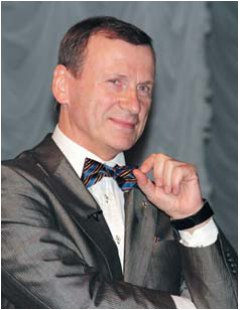
Різноманітність реставрацій залежить від стоматологічного статусу і платоспроможності населення країни. Жодна країна у світі не може забезпечити стоматологічне здоров'я за рахунок державного бюджету, це вирішується переважно за рахунок пацієнта.
Різноманітність реставрацій залежить від того, які стоматологічні школи і новатори працюють у країні, вони і формують ареал реставрації. Темпи оновлення, розвитку стоматологічних технологій, матеріалів, устаткування нині порівнюють з розвитком комп'ютерної техніки. Ми змушені частіше оновлювати свою роботу, тому що з'являються нові прийоми, способи і нові можливості. Це залежить від активності професійних об'єднань, таких як Асоціація стоматологів, Академія естетичної стоматології і т. д., тих, які сприяють популяризації нових технік і технологій серед стоматологів. Із цієї різноманітності ми виділимо своєрідний закритий клуб «Стиль Італіано», засновниками якого є наші друзі Вальтер Девото і професор Анжело Путіньяно. У цього клубу є своя філософія і своя біблія, це книга «Layers», яку написали Джорді Манаута і Анна Салат. Є свої таємні зібрання, одне з них відбулося у Пізі 20-21 липня цього року.
Наша технологія, яка образно називається «Біоміметика», була опублікована 1996 року, тоді ж Лоренцо Ваніні опублікував свою «Стратифікацію», а роком раніше Дідьє Дічі надрукував свою теорію техніки натуральних шарів. У всіх технологій є як затяті супротивники, так і переконані послідовники. Ми вирішили, що «Біоміметиці» і «Стилю Італіано» треба зустрітися і поговорити між собою. Національні школи реставрацій змінюються, спираючись на інтернет. Якщо раніше обмін інформацією здійснювався на семінарах, конференціях, то тепер це відбувається в мережі щодня... Facebook настільки професійно зайнятий стоматологами, що проф. Анжело Путіньяно констатував: «Facebook based dentistry». Це справді нове явище епохи глобалізації, коли ми можемо обмінюватися думками як експерти і таким чином робити висновки, не чекаючи, доки будуть завершені, опубліковані і обговорені наукові праці. Спробуймо порівняти і вирішити, що нам цікаво і що можна взяти у своє реставраційне меню, формуючи особистий стиль.
Вчасно і правильно — пряма реставрація зберігає здоров’я
Володимир Черевко
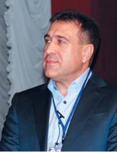
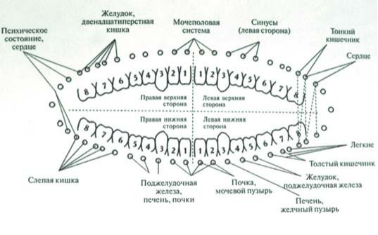
Зубощелепна система пов'язана з внутрішніми органами людини. Основа тибетської філософії, яка викладена у багатьох світових релігіях, вказує на те, що структура тіла людини має ефірне, астральне і ментальне тіло. Є чіткі зв'язки між цими тілами. Ефірне тіло поширюється на 40 см від фізичного, і можна відчути, яка енергетика від нього виходить. Від верхівки до куприка розташовані сім енергетичних центрів, які управляють певними органами. Кожному енергетичному центру відповідає ендокринна залоза. Також активні точки органів проектуються на стопи, на райдужку ока, на зубощелепну систему, долоні. Ушкодження на кожному рівні призводить до закономірних проявів в інших. Нові науки, течії, що з'являються у медицині, вказують на можливості діагностики, яка ґрунтується на аналізі цих зв'язків. Діагностика зубощелепної системи розпочинається вже з аналізу зовнішнього вигляду. Так само, як панорамні знімки допомагають ще до огляду побачити, який зуб відсутній, осанка, хода пацієнта можуть вказувати на проблеми опорно-рухового апарату. Ми бачимо наслідок і можемо виявити ту причину, яка призвела до розвитку патології в організмі цього пацієнта. Середньостатистичний стоматолог, усуваючи певні дефекти зубів, може вважати свою лікарську функцію виконаною. Але нинішня стоматологія без остеопатії, фізіології, гнатології не може існувати. Без співпраці фахівців провести повний аналіз клінічної ситуації, скласти повноцінний план лікування неможливо. Тому що зуби — це відображення усієї кісткової системи; зуб, як і кожен хребець, відповідає певному нервовому сплетінню.
Людина за своєю природою є системою, що саморозвивається і самовдосконалюється. Ми прийняли певні стандарти: без використання рабердаму, мікроскопа, відео- і фотографування складно виконати високопрофесійну роботу. Так само ми повинні прийняти, що будь-яке наше втручання енергетичними шляхами впливає на різні структури і органи тіла людини. Зв'язок зубощелепної системи і рухового апарату простежується у кривизні зіничної лінії, кривої Шпее. Якщо лінії не паралельні, то у людини можуть боліти тазостегновий суглоб, коліна. Перш ніж відновити окремий зуб, людину треба відправити до мануального терапевта. Привести в порядок тіло, а потім займатися зубами.
Золотий стандарт реставрації — час міняти стандарти
Олексій Варламов (Казахстан)
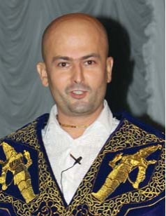
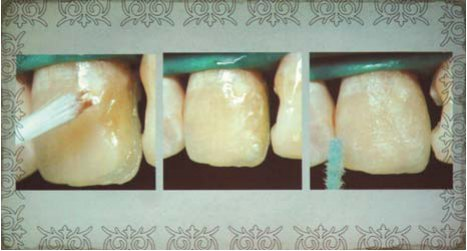
Однією з ознак достатку і доброжитку в Середній Азії вважається наявність золотих зубів. Подальша презентація — про перетворення молодої казахської дівчини-нареченої з трьома такими ось золотими коронками на передніх зубах. Для такого перетворення часові рамки були дуже обмежені, що дуже звужувало вибір реставраційної техніки. Перед препаруванням виготовлення силіконового шаблону дозволяє у будь-який момент виконати тимчасові коронки. Після зняття коронок стає очевидно, що об'єктивно каріозне ураження було лише в одному центральному різці з дефектом класу IV. У клінічній практиці автор використовує біоміметичну техніку реставрації Сергія Радлінського і вважає, що ця техніка при реставрації зубів традиційного кольору приблизно у 80% випадків дозволяє виконувати ефектні реставрації. Проте, на думку автора, складності потрапляння в колір натуральних зубів, з якими стикаються деякі стоматологи, легко компенсуються за рахунок модифікаторів кольору, застосування яких характерне для італійської реставраційної школи. У продемонстрованій роботі були використані модифікатори кольору — фарби фірми Мічеріум: для надання насиченості дентину — коричневий відтінок, а для імітації висхідних колон і плям флюорозу — білий опаковий відтінок. При виконанні роботи автор не користувався штангенциркулем і мікрометром, оскільки надає перевагу інтуїтивному відновленню.
Майстерність лікаря полягає і в умінні бачити недоліки своєї роботи, запобігати ускладненням і виправляти помилки. Це уміння можна натренувати, і певне тренування можна отримати, беручи участь у міжнародному Призма-чемпіонаті з прямої реставрації зубів. Олексій Варламов рекомендує стоматологам брати участь у Призма-чемпіонаті, що благотворно позначиться на їхньому професійному зростанні.
Ефективність як властивість прямої реставрації зубів
Володимир Новіков
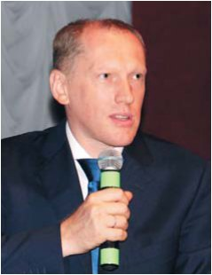
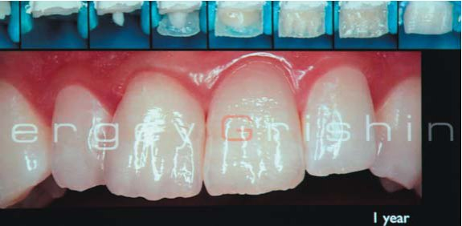
Лектор виступив з описовою доповіддю, презентуючи сучасну реставраційну стоматологію. Умови матеріального забезпечення в різних регіонах дуже різні, проте центрів прямої реставрації зубів чимало. Пряма реставрація живе, і її ефективність доведена тим, що упродовж довгих років ми збираємося на семінарах ДентАрт. Автор продемонстрував, що таке «погана» реставрація, на прикладі так званої мережевої соціальної реклами одного стоматолога, яка багаторазово обговорювалася в інтернеті. Цей стоматолог щиро вірить у те, що він робить, і виставляє на своєму сайті роботи під назвою «Лазерне виправлення прикусу у 18 років», «Векторальное протезування» і т. д. На жаль, залишається тільки пошкодувати, що цей стоматолог не їздить до нас на семінари. Але є й багато інших, талановитих, мислячих стоматологів, готових захистити ідеали реставрації. Один із них — Сергій Гришин, розробник методики реставрації зі складанням індивідуальних складних колірних карт. Діапазон використання реставрації дуже широкий. Дефекти відновлюються досить просто, красиво, в обмежений час і з якістю, що зберігається роками. Лектор продемонстрував клінічний випадок, коли для отримання естетичного результату було видалено поверхневий шар керамічного вініру і проведено корекцію прозорості і форми зуба у прямій техніці реставрації. Так було отримано симетричний і естетичний результат, якого не вдалося досягти за допомогою чистої непрямої техніки, і попри те, що така практика застосовується рідко, ефективність прямої реставрації проявляється навіть у таких складних випадках.
Ми знаємо, що лікареві набагато простіше підібрати колір та прозорість і маніпулювати цими категоріями, ніж передати точну і зрозумілу інформацію про них зубному технікові. Комунікації лікаря і зубного техніка присвячуються окремі симпозіуми.
Пряма реставрація проста у виконанні, її легко полагодити при сколах і поломках, довговічність таких реставрацій доведена часом.
Володимир Новіков подякував Сергієві Радлінському за те, що Призма-чемпіонат уже 20 років збирає талановитих лікарів на міжнародні змагання, основними цілями яких є:
- відпрацювання елементів контролю якості;
- приклади для пацієнтів для вибору стоматолога;
- моніторинг реставраційної майстерності для викладачів і організаторів;
- просування реставраційних матеріалів і технологій;
- «розкручування» талановитих стоматологів;
- надання стоматологічної допомоги конкретним пацієнтам;
- поліпшення іміджу стоматології у суспільстві.
«Кажуть, що Київ — мати міст руських. Так от, я можу сказати, що «Аполлонія» — мати реставрації нашого інтернаціонального простору», — зазначив автор на завершення доповіді.
Естетична реабілітація стертих зубів — особистий шлях
Петар Дучев (Болгарія)
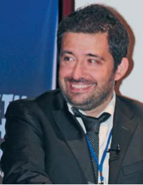
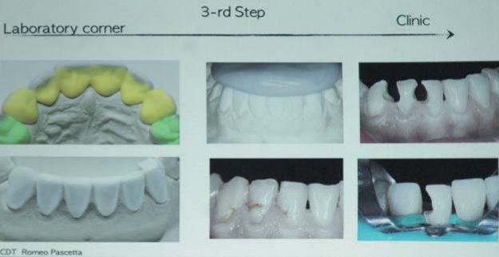
Лектор розповів про свій шлях, який пройшов у пошуках рішень проблем пацієнтів з підвищеним стиранням і ерозією.
Тривалий час увага стоматологів була сконцентрована на проблемі карієсу зубів і його ускладнень. І завдяки цим зусиллям по всьому світу кількість карієсу різко зменшилася. Але все більше статей і доповідей говорить нам про велику проблему стирання, ерозії і абразії. Перша стаття з цієї проблеми надрукована 1947 року. У цій статті автори зробили прогноз вірогідності таких проблем у майбутньому. Нині ми вже можемо оцінити реалії цієї проблеми. Дослідження, проведені у Великобританії, засвідчили, що 35% підлітків у цій країні мають проблеми, пов'язані з ерозією і абразією. Проблема стирання зубів зачіпає дуже молодих пацієнтів до 25 років. У стоматолога виникає питання, що робити і чи робити взагалі? І ця дилема розділяє нас на кілька підгруп. Думка перших: без каріозних уражень необхідності втручань немає, і можна відстрочити їх до прояву серйозніших ушкоджень. Інші готові втрутитися лише в стерті ріжучі краї. Але є третя група група стоматологів, до якої ми з вами належимо і яка вирішує цю проблему на ранніх етапах її виникнення.
У 2009 році Женевський університет склав класифікацію, яка запропонувала розділити ерозію і атрицію. За ознакою, яка враховується в цій класифікації — стирання центральних різців, виділено шість класів ушкоджень. I клас — стирання емалі піднебінної поверхні, але дентин ще не розкритий і лікування не потрібне; II клас — оголення дентину піднебінної поверхні, але ріжучий край не уражений, і цей дефект треба закривати; III клас — значне розкриття дентину, ушкодження ріжучого краю, може бути виготовлений піднебінний вінір у прямій і непрямій техніці; IV клас — значне руйнування ріжучого краю, і в лікуванні можна застосувати сендвіч-техніку; у класах V і VI — ушкодження дентину видно і на вестибулярній, і на піднебінній поверхні. При лікування таких пацієнтів необхідно застосовувати комбінований комплексний підхід. Усі шляхи спрямовані на відновлення зубної морфології, зубного ряду, прикусу.
Починаючи з 2006 року, Петар Дучев застосовував відновлення в техніці Сергія Радлінського. Спочатку виконують пряме композитне відновлення зубів верхньої щелепи, ікол, потім бічних зубів, і завершується цикл реставрацією передніх. Усе це виконується в першу сесію лікування. Далі провадиться відновлення зубів нижньої щелепи. Робота досить складна, і основний недолік цієї роботи — це непередбачуваність результату. Після шести років жоден зуб не потребував переліковування у зв'язку з вторинними каріозними ушкодженнями або пародонтологічними проблемами. Реставрації дуже біологічно щадні до ясенного краю, але не витримують критики з точки зору естетики. Якщо пацієнт не вимагає довготривалого високоестетичного результату, то така реставрація може бути цілком прийнятною. Проте у разі лікування пацієнтів з високими естетичними вимогами потрібні пошуки альтернативних відновлень.
У 2008 році з'явилася триступенева техніка Франчески Вайлаті, яка включає три лабораторні і три клінічні кроки. Перший лабораторний крок полягає у восковому моделюванні вестибулярної поверхні, а клінічний — у перенесенні лабораторного моделювання в порожнину рота. Ці прототипи дозволяють лікареві і пацієнтові бачити кінцевий естетичний результат лікування.
Другий лабораторний крок — це воскове моделювання бічних зубів з повним оклюзійним аналізом в артикуляторі, у клініці ці прототипи поміщаються в порожнину рота пацієнтові на місяць. Це дає можливість збільшити вертикальний розмір прикусу. Третім кроком у лабораторії виконується відновлення піднебінної поверхні різців з контролем переднього ведення, і потім у клініці виконується перенесення на природні зуби.
У своїй практиці Петар Дучев виконує ретельний аналіз фотознімків і з урахуванням клінічного аналізу та вимог пацієнта передає технікові відбитки з показниками лицевої дуги. Воскове моделювання 8 зубів включає моделювання вестибулярної поверхні премолярів, виконується без препарування гіпсових зубів, для повноцінного перенесення без попереднього препарування. Після затвердження естетичних моментів у лабораторних умовах після препарування виконується відновлення бічних зубів зі збільшенням вертикального розміру і отриманням відкритого прикусу у фронтальній ділянці. На завершальному третьому етапі лабораторно без воскового відновлення і виготовлення композитних прототипів відновлюється піднебінна і вестибулярна поверхні постійними керамічними вінірами. «Шлях, який я пройшов від прямої до непрямої реставрації, можливий лише при формуванні близького тандему між лікарем і зубним техніком! Мій технік Ромео Пасчетта з Італії, я веду практику в Софії, але досягнуте взаєморозуміння долає відстані», — підкреслив лектор.
Естетична реставрація зубів композитами: віддалені результати
Олександр Ніколаєв
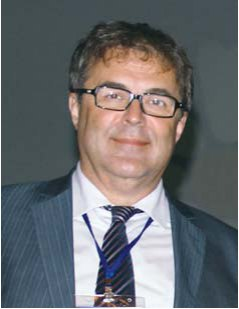
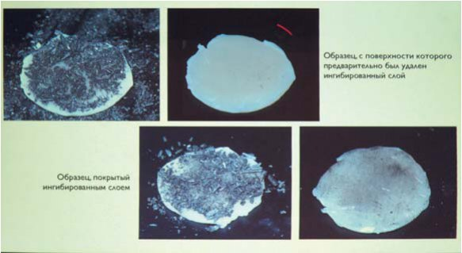
У цій лекції були проаналізовані віддалені результати реставрацій у різних клініках. Було виявлено найбільш значущі проблеми: втрата сухого блиску; порушення крайового прилягання матеріалу і тканин зуба; порушення анатомічної форми реставрації (стирання, часткове або повне руйнування); пори в матеріалі. Ми навчилися відновлювати жувальну групу зубів, але аналіз віддалених результатів таких відновлень показує, що через півроку-рік 50% усіх реставрацій вимагають корекції або заміни. І головною причиною є неправильне тлумачення малоінвазивного препарування. Доведено, що коли пломба на всій жувальній поверхні, то у фісурі, яка залишилася, у 94,2% випадків діагностується каріозний процес. Середній індекс КПУ у дорослого населення становить 18,6. Значні проблеми відновлення бічних зубів: вторинний карієс; порушення крайового прилягання; забарвлювання межі матеріалу з тканинами зуба; порушення анатомічної форми реставрації (стирання, часткове або повне руйнування). Але ще більше неспроможні реставрації пришийкових дефектів. Лише у 36% усіх лікованих пришийкових порожнин пломби мають задовільний результат через два роки експлуатації. Загальна тенденція така, що 25% усіх композитних реставрацій незадовільні через 3-4 роки. Причому це пов'язано з похибками в роботі оператора — не пришліфована межа стику матеріалу з тканинами зуба, залишені ділянки з каріозним ураженням і т. д. Варто зазначити, що порушення, які зустрічаються найрідше, — це невідповідність натуральним зубам кольору і прозорості реставрації. Тобто ми навчилися реставрувати красиво й естетично, але не вміємо робити наші реставрації довговічними. І для поліпшення роботи треба враховувати низку чинників: відновлення естетичних і функціональних властивостей зуба, адекватне обґрунтування з медичної точки зору, лікування захворювань твердих тканин зуба і тканин, що його оточують, профілактика ймовірних ускладнень, застосування реставраційних матеріалів у відповідності з їх властивостями і показаннями до клінічного застосування, відповідність фізико-механічних властивостей реставрації і біомеханічних характеристик зуба, дотримання технологій ізоляції, препарування і використання пломбувальних матеріалів, контроль і догляд за реставрацією у найближчі і віддалені терміни.
Важливий метод підтримання реставрації в порожнині рота — професійна гігієна. Дуже гарна реставрація при неналежному догляді може з часом перетворитися на шматок неестетичного матеріалу. Процес цей неминучий — він закладений у структурі самого матеріалу. Виходом із ситуації є періодичне полірування реставрацій. Чи може пацієнт підполіровувати реставрацію самостійно в процесі гігієнічних маніпуляцій? Наприклад, щіткою Орал-Бі, їх насадкою 3D Вайт? Проведено дослідження на різних зразках композиту, частина з яких була відполірована, а інша ні. Якість поверхні перевірялася за допомогою графіту. Звичайною зубною пастою очищали поверхню зразків одну хвилину і отримали результат, що шару, інгібованого киснем, не було, за винятком заглиблень у самому матеріалі. При дослідженні втрати сухого блиску використовувалися порошки для Ейр-Фло і звичайна зубна паста: спостерігалася втрата сухого блиску при застосуванні як мануальної зубної щітки, так і технології Ейр-Фло. Також у дослідженні проведено аналіз, чим краще видаляти наліт на зубах. При аналізі права половина очищена з порошком Ейр-Фло софт, а ліва – за допомогою щітки і абразивного порошку. Зовні якість гігієни задовільна, але після фарбування поверхонь зубів якісніше чищення, з мінімальним ушкодженням і в коротші часові рамки, виявлене праворуч — з порошком Ейр-Фло софт.
Усі проведені дослідження дозволили сформулювати деякі практичні рекомендації для пацієнтів, котрі мають великі реставрації в естетичній зоні: раз на півроку проходити професійну гігієну зі шліфуванням і поліруванням композитних реставрацій; застосування Ейр-Фло; не рекомендується використання на реставрованих зубах як ультразвукових насадок, так і кюрет; для закриття пор на поверхні реставрації можна використати спеціальні герметики, наприклад ПермаСил (Ультрадент).
90% дорослих пацієнтів чистять зуби неправильно. До 30-ти років у людей формуються навички гігієни порожнини рота, і дослідження стоматологів і психологів засвідчують, що пацієнти, старші за 30 років, ймовірно, так і не навчаться правильно чистити зуби. Тому пацієнтам треба призначати засоби гігієни, які навіть при неправильному чищенні забезпечать нормальний гігієнічний стан порожнини рота. Ми повинні не лише мотивувати пацієнта, можемо рекомендувати застосування електричних зубних щіток, флосів та обполіскувачів. У складних випадках можливе використання іригаторів. Успішна естетична реставрація — це комплексна проблема. Вибір методів і засобів естетичної реставрації зубів і гігієни порожнини рота повинен вестися індивідуально, з урахуванням медичних, психологічних, естетичних і фінансових аспектів. Естетика має бути функціональною, а функція – естетичною.
Пошарова техніка для невидимої реставрації
Моналдо Сарачинеллі (Італія)
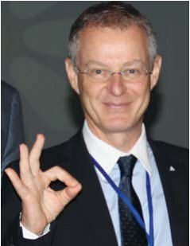
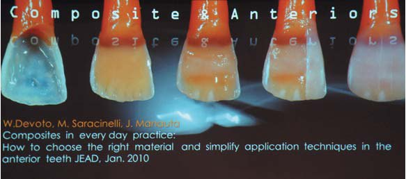
«І я вірю, що тільки шляхом поширення знань можна поліпшити якість нашої професії», — так розпочав свою доповідь представник клубу «Стиль Італіано». Цей клуб — група людей, яких об'єднало одне захоплення і які люблять ділитися своїми напрацюваннями.
Багато стоматологів шукають простий і передбачуваний спосіб відновлення зубів. Чорно-біла ера перетворилася на кольорову — ми отримали великі можливості створення конструкцій. Мета сучасної прямої реставрації полягає в тому, щоб зруйнувати межу між консервативною стоматологією і протезуванням. Особливо це стосується відновлень у молодих пацієнтів без ушкоджень сусідніх зубів, ґрунтуючись на мінімально-інвазивному лікуванні функціонально і естетично. Для реалізації своїх цілей лектор зробив ставку на композити. Але тільки знання технічних характеристик матеріалу дають нам можливість отримувати передбачуваний результат.
Усі етапи оперативного протоколу розпочинаються з ізоляції операційного поля рабердамом, препарування, кислотної і адгезивної обробки, пошарового внесення матеріалу, фінішної обробки і полірування. Завдяки технологічній революції ми маємо величезну силу адгезії. Перший етап нашого протоколу — препарування — таке, яке зберігає здорові тканини і робить невидимою лінію з'єднання композиту і емалі. Оформлення краю емалі різні клініцисти роблять по-різному, важко радити єдиний спосіб. У своїй роботі доктор Сарачинеллі оформляє край порожнини прямим уступом, а потім кулястим бором оформляється перехідна зона 2 мм на поверхні емалі, непідтримані емалеві призми заполіровуються.
При внесенні матеріалів лікар повинен добре знати характеристики прозорості дентинних і емалевих відтінків, адже опаковість і прозорість впливають на колір більше, ніж вибір відтінку. У практиці автор вважає за краще працювати дентиновими масами матеріалу з високим ступенем опаковості, аж до 80%, для використання в пришийковій ділянці, найчастіший рецепт — поєднання 90% дентинного відтінку і 10% емалі із застосуванням силіконового індексу для дозування положення і кількості матеріалів. Емаль використовується у зовсім невеликих кількостях, особливо якщо вона дуже прозора, для того, щоб не знизити яскравість реставрації. Річ у тім, що людське око чутливіше до зміни яскравості (світлоти), ніж хроматичності. Так само, як і форма є важливішим чинником, ніж колір. Іноді для зміцнення тонкої емалевої стінки можна використати невелику кількість текучого композиту по краях. Далі техніка полягає у переведенні порожнини в порожнину, подібну до класу I. Стандартні матриці дають трикутну форму зубів, і використання прозорих секційних матриць дозволяє виконати правильний профіль реставрацій без надлишку по краях. Використання силіконового індексу і секційних матриць спрощує процедуру отримання форми. Після замикання проксимального контуру можна братися до пошарового внесення емалевих матеріалів.
Якщо проаналізувати дентинні відтінки одного кольору, але різних виробників, можна побачити, наскільки вони відрізняються. Якщо ми хочемо отримати реальне забарвлення, слід користуватися індивідуальною різноколіркою, створеною з матеріалу, яким працюємо, причому виконаною в тій товщині, в якій працюємо. Заготовка дозволяє отримувати індивідуальні зразки. Для цього необхідно проаналізувати і побачити внутрішню структуру зуба. Поляризаційний фільтр при фотографуванні забезпечує зображення в глибині. Якщо дотримуватися протоколу, починаючи зі створення форми піднебінної поверхні і проксимальних контактів, завершуючи реставрацію пошаровим накладенням дентинових мас, ефект-мас, так званих модифікаторів і невеликої кількості емалевих мас, ми отримаємо добрі естетичні результати.
Проблеми естетики в ендодонтії і реконструкція зубів
Мацей Жаров (Польща)
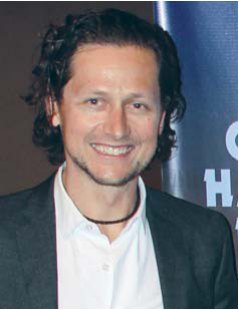
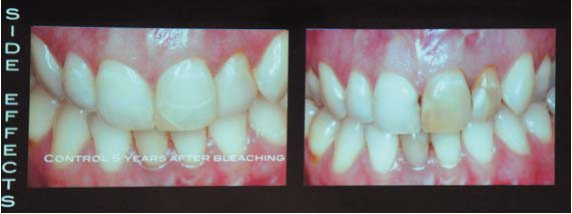
Ендодонтично ліковані зуби більше піддаються фрактурам, крихкіші у порівнянні з вітальними. Причому офіційна стоматологія говорить, що найчастіше зуби після ендодонтичного лікування видаляються після некоректного відновлення, а не внаслідок невдалого ендодонтичного лікування. Тому перехід лікування в мікроскопічне відновлення не повинен позбавляти нас фокусування на реставрації. Вітальні зуби мають захисні механізми, які запобігають їх перевантаженню. Такі зуби пересихають, і ускладнення можуть бути обумовлені втратами колагену.
Одна із серйозних проблем — виникнення дисколоритів унаслідок неповноцінного ендодонтичного лікування, травми пульпи, забарвлювання сульфітом заліза, застосування різних фарбувальних матеріалів. Внутрішньоканальне відбілювання можна виконувати сумішшю натрію карбонату і 3% перекису водню, а якщо пацієнт не досяг 17 років, перекис водню треба замінити на воду. Виробники також часто пропонують гелі для внутрішньоканального відбілювання. Головна умова — точне позиціонування ясенного краю для установки внутрішньоканального бар'єру. Створюємо бар'єр із склоіономерного цементу зі злегка увігнутою поверхнею, вносимо відбілювальний гель, з обов’язковою умовою ізоляції країв основної порожнини, інакше тимчасова пломба швидко випаде. Залежно від вираженості дисколориту пасту необхідно міняти 3-4 рази. Після циклу відбілювання відновлювати зуби відразу не можна, потрібна перерва від 14 до 21 дня. Дуже важливо на цей період залишити в зубах гідроксид кальцію для підвищення рН. Виконуючи внутрішньоканальне відбілювання, ви завжди повинні пам'ятати про ускладнення. Цервікальні резорбції найчастіше виникають у людей до 25 років з некрозом пульпи в 1-13% випадків, частіше у жінок. Причиною може бути недотримання техніки виконання. Протипоказання до виконання внутрішньоканального відбілювання — стоншування дентину в цервікальній зоні і вік до 17 років.
Реставраційні матеріали і обладнання Дентсплай
Андреас Грютцнер (Німеччина)
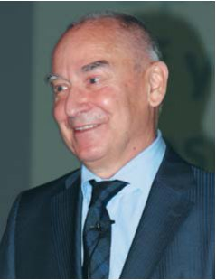
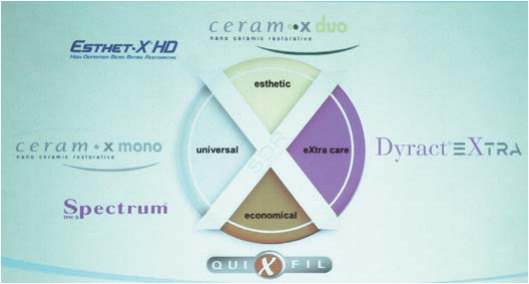
У лекції були представлені не лише стоматологічні новинки, але й зміни, яких зазнала стоматологія на сьогодні. Істотні новинки випущені компанією Дентсплай на ринку матричних систем. Існує два види матриць: кільцеві і секційні. В обох системах застосовуються клини, але їх використання має різні цілі. У секційних системах вони служать для сепарації зубів, а в кільцевих — для адаптації матриці у пришийковій зоні. Кільцеві матриці застосовуються при великих дефектах зі значною втратою тканин, де неможливе застосування секційної матриці. Секційні матриці мають переваги в контурі контактної поверхні, він виходить більш опуклої, більш фізіологічної форми у порівнянні з контактною поверхнею, сформованою за допомогою кільцевої системи. Нова секційна матрична система Палодент Плюс (Дентсплай) має ряд переваг. Це стійкість кільця, гарна адаптація, поліпшена фіксація ніжок кільця на клині, додаткова захисна матриця для сусіднього зуба при препаруванні, наявність спеціального пінцета і відповідних отворів на матрицях, щадний клин V-подібної форми, нові секційні матриці, які дозволяють характеризувати і адаптувати реставрацію по пришийковому краю, з дотриманням анатомії, особливо в ділянці шийки, кільця сепарацій з нікель-титанового сплаву і пластика, з роздвоєними ніжками для ліпшої фіксації. Так звана сендвіч-техніка внесення склоіономерного цементу перед композитом дуже популярна в Центральній і Східній Європі. Внесення базового цементу зменшує об'єм композиту, знижуючи його усадку і полімеризаційний стрес внесеного шару композиту, але адгезивне з'єднання між базовим цементним матеріалом і композитом зменшує площу адгезивного з'єднання композиту із зубом. Одним з нових матеріалів, який може використовуватися при сендвіч-техніці, є Біодентин, який завдяки своєму складу сприяє виробленню замісного дентину. Застосування базових матеріалів має недоліки: зменшення поверхневої адгезії, необхідність чекати затвердіння базового матеріалу. Єдине показання для внесення ізоляційного матеріалу — пряме або непряме покриття пульпи в невеликій кількості і тільки в місці проекції рогу пульпи, залишаючи усю поверхню вільною для адгезії. Сучасний підхід до відновлення зубів передбачає внесення базового матеріалу, в цій ролі широко застосовуються текучі композити, які запобігають утворенню мікропроміжків і порожнеч у зоні піднутрень. Застосування текучого композиту ЕсДіАр дозволяє виконати відновлення дентину однією порцією, знижуючи полімеризаційний стрес. Цей матеріал не поліпшує і не погіршує властивості реставрації, але зменшує час роботи. Гарна адгезія — одне з найбільших досягнень у стоматології. На ринку існує багато різних адгезивних систем і їх класифікацій. Уве Блунк ділить адгезивні системи на традиційні системи в техніці тотального протравлювання і самопротравлюючі системи, які можна розділити на однокрокові і багатокрокові. За даними літератури, найнадійнішими визнані адгезиви в техніці тотального протравлювання, а найзручнішими і найшвидшими у застосуванні — самопротравлюючі адгезиви. Ситуації, коли краще вибрати самопротравлюючі адгезиви: швидкість нанесення, переважання об'єму дентину, робота з компомерами, відсутність потреби в дуже сильній адгезії. Існує 8 смертних гріхів при використанні адгезивів:
- лікарі не читають інструкцій щодо застосування;
- системи чутливі до нагрівання;
- контамінація поверхні кров'ю або ротовою рідиною;
- надмірне протравлювання;
- недостатнє вимивання;
- пересушування;
- кількість внесення адгезиву;
- виникнення білої лінії при полімеризації, що пов'язане з недостатнім видаленням адгезивної системи.
Передбачуваний естетичний результат у прямій реставрації передніх зубів
Гаетано Паолоне (Італія)
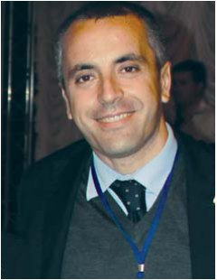
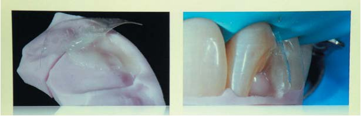
Лектор подякував Сергієві Радлінському, який надав можливість поділитися своїми знаннями в Україні і поговорити про досягнення найкращих результатів у прямій реставрації.
Щоб отримати результат, недостатньо вибрати правильний колір. Раніше лікарі працювали чорно-білими матеріалами, і ось композити дали стоматологам можливість гратися кольором. Нам здається, що зуби складаються з кольору дентину і кольору емалі, насправді ми не вибираємо колір, а розмірковуємо про тривимірне. Однією з найважливіших властивостей зуба є прозорість, яка дозволяє побачити внутрішні структури. Також якщо позбавити зуби опалесценції і флуоресценції, вони втратять природний зовнішній вигляд. Натуральний вигляд зубів забезпечується різними проявами у світлі, що проходить, відбитому і прямому. Одна з важливих властивостей зуба — яскравість, або світлота, — здатність зуба відбивати певну кількість світла. Визначення кольору за допомогою існуючих різноколірок не завжди є точним. Більшість різноколірок — пластикові структури, не завжди необхідної товщини, що не мають прозорості. Є також різноколірки з кераміки і композиту, є і повніші, які складаються з композиту, що імітує дентин і емалеві маси. Основна проблема таких різноколірок — їх товщина не відповідає товщині матеріалу зуба, що реставрується, тому треба мати власну шкалу еталонів з матеріалів, якими працюєте. Для точної передачі колірних характеристик зубів необхідно намалювати схему зубів до їх пересихання. Щоб побачити внутрішню структуру зуба, нам потрібне відбите світло, побачене дає чітку картину топографічних уявлень для досягнення результату. Якщо колір підібраний правильно, але форма зуба відтворена неточно, різниця між структурами зуба і реставрації буде помітна. При правильно відновленій формі незначні колірні відхилення не матимуть значення. На чемпіонаті були представлені роботи, виконані у вільній техніці. Стиль Італіано надає перевагу іншому підходу, лабораторному. Після лабораторного моделювання на моделі з максимальним відтворенням структури зуба можна виготовити шаблон або силіконовий індекс. На силіконовому індексі можна прокреслити умовну лінію реставрації, по якій буде накладено шар матеріалу для формування піднебінної стінки і її адаптації у ротовій порожнині. Важливо отримати тонкий перший шар, а потім за допомогою опуклих формених матриць відновити проксимальні стінки реставрації. Отримана проста форма у вигляді човника полегшує пошарове внесення матеріалів. Силіконовий індекс також можна застосувати для контролю об'єму вестибулярної поверхні. Стоматологи знають, що збільшення товщини істотно впливає на колір. Інструмент Місура дозволяє дозувати об'єм дентину і прибрати надлишки. Після нанесення останнього шару емалі полімеризація проводиться через шар ізолюючого матеріалу, щоб уникнути утворення шару, інгібованого киснем. Це дуже спрощує і полегшує фінішну обробку. Мікроструктура реставрації допомагає приховувати дефекти і розсіює світло.
Біоміметика у прямій реставрації — український стиль. Передні зуби
Сергій Радлінський (Україна)

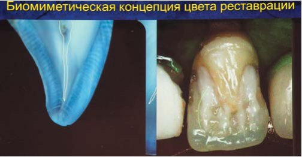
Біоміметику не можна назвати українським стилем, швидше це стиль з України. Хоча у нас багато талановитих стоматологів, які працюють і в Стилі Італіано. Що спільного між двома стилями: розширені показання до застосування прямої реставрації, стирання меж між прямою і непрямою реставрацією, адгезивна техніка як основа реставрації. Цитуючи Вальтера Девото: «Протипоказання до прямої реставрації тільки одне — відсутність фантазії у оператора». На думку ж Сергія Радлінського, все, що можна ізолювати, можна склеїти, а все, що можна склеїти, можна реставрувати. Ендодонтія і реставрація нероздільні. Одна анестезія, один рабердам. Чим раніше зуб буде закритий герметично, тим кращий прогноз щодо його збереження в майбутньому. Побудова передніх зубів від центру назовні називається центрифужним способом.
У чому відмінності між стилями: досягнення кольору зубів, що реставруються, побудова контактів між зубами, алгоритм побудови реставрації, визначення розміру і форми зубів, різний підхід до необхідності штифтування зуба, до досягнення яскравості і кольору девітальних зубів, відновлення стертих зубів. Жодна система у світі не говорить, що зуб усередині світлий, усі імітації кольору робляться за рахунок перекриття згори, хоча колір починається усередині зуба. За рахунок світлого центру можна імітувати вікові зміни зубів, застосовуючи одні і ті ж самі відтінки. Необхідно узяти чотири відтінки і всього лише скласти в топографії зуба. Фірми не можуть гарантувати стоматологові точного отримання кольору, не знаючи, в якому об'ємі він буде застосований оператором. Зовнішній вигляд реставрації залежить від шарів, їх товщини і поєднання. Результат стане передбачуваним після напрацювання досвіду і мануальних навичок.
Емаль і дентин мають різні фізичні властивості. Жодна компанія у світі не випускає матеріал, де дентинні відтінки були б м'якшими і еластичнішими, ніж емалеві. Мікрогібридний матеріал легко вклеюється, добре розсіює світло і оптимально еластичний, але має велике стирання і втрату блиску. Наногібридний композит чудово блищить, менше стирається, але має погану вклеюваність і погано розсіює світло. Наша рекомендація: у реставрації слід застосовувати матеріали різного типу, замість емалі — нанокомпозит, замість дентину — мікрогібрид. Така комбінація компенсує недоліки один одного і дозволяє проявити найліпші властивості кожного матеріалу.
Передбачуваний естетичний результат у прямій реставрації бокових зубів
Гаетано Паолоне (Італія)
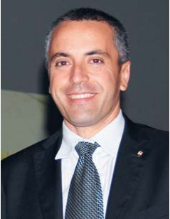
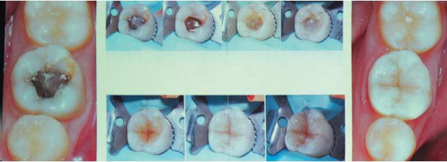
У бокових зубах проблем з естетикою немає, ця зона невидима. У питанні післяопераційної чутливості треба звернути увагу на адгезію. Для правильного функціонування горба, який зазнає підвищеного навантаження, важливо дотримуватися правил адгезії. Відсутність мікропідтікань перешкоджає появі післяопераційної чутливості. Чутливість часто виникає у молодих пацієнтів з широкими дентинними канальцями. У таких випадках треба ретельно розподіляти адгезив і засвічувати з надлишком, а після адгезивної підготовки можна використати текучий композит для посилення міцності. Вважається, що порожнини класу I — прості порожнини. Так було в еру амальгами, але в еру композитів необхідно переглянути наші уявлення з урахуванням даних про усадку і полімеризаційний стрес реставрації. Хоча з точки зору естетики порожнини класу I можна заповнити текучим композитом і покласти шар емалевого відтінку. Порожнини класу II завжди переводяться в порожнину класу I. При побудові контактного пункту використовується металева матриця, адаптована пасивно введеним клином і сепаруючим кільцем. Після побудови контактної поверхні можна заповнювати оклюзійну порожнину у будь-якій техніці: пошарово, однією порцією. При заміні амальгами на композит треба використовувати дуже опакові матеріали для блокування темних тканин у порожнині. Прийнятніше лікувати не по одному зубу, а секторами.
У зубі є важливі зони, які уражаються частіше, — це зона фісур, проксимальний валик. Моналдо Сарачинеллі розробив техніку для відновлення проксимальних валиків з модифікованим кільцем. Ця техніка дозволяє отримати кривизну проксимального валика, яка була до препарування зуба. Після відновлення зуба реставрацію слід перевірити за допомогою основних функціональних рухів: протрузії і латеротрузії.
Перед стоматологом часто виникає питання вибору техніки реставрації. Так яка ж прийнятніша, пряма чи непряма реставрація? Не існує великої різниці між цими реставраціями, виконаними з композиту. Проте слід пам'ятати, що кількість тканин впливає на характеристики міцності зуба. Неправильний доступ в ендодонтично лікованих зубах, оклюзійно-мезіально-дистальне препарування з втратою проксимальних валиків ослаблюють міцність зуба. Для отримання міцної прямої реставрації товщина стінок зуба, що реставрується, має бути не менше 2 мм.
«Коли мене запитують, в якій техніці я відновлюю жувальну поверхню зубів, я відповідаю, що мене не цікавить техніка, а цікавить анатомія зубів», — так закінчив свою доповідь доктор Паолоне.
Біоміметика у прямій реставрації — український стиль. Бокові зуби
Сергій Радлінський (Україна)
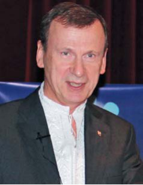
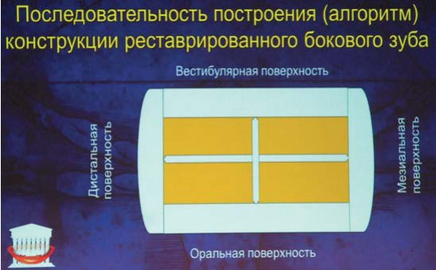
Техніка відновлення бокових зубів була описана в статті 1999 року. Побудова при довільних дефектах завжди розпочинається з побудови стінок, спочатку оральної, потім вестибулярної, орієнтуючись на сусідні зуби. Таким чином довільний дефект переводиться в дефект МОД, а після побудови проксимальних стінок — у дефект О. Контактні поверхні будуємо окремо одну від одної, починаючи з дистальної і закінчуючи мезіальною. Жувальна поверхня заповнюється пошарово: дентин, емаль, поверхнева емаль. Рекомендовано будувати кожен бугор окремо або групу бугорків (направляючі і опорні), засвічуючи лише по кілька секунд для стабілізації. Враховуючи, що С-фактор для нерозділеного дентину становить 5 одиниць, була запропонована техніка Квадра-Сил — розділення дентинного шару композиту двома розрізами на чотири частини, що знижує С-фактор до 1 одиниці для кожної порції. Після попередньої полімеризації шару дентину заливаємо прорізаний проміжок текучим композитом і дополімеризовуємо на весь ступінь полімеризації упродовж 20 секунд, потім укладаємо емалеві відтінки. Використовуючи цю техніку і без ЕсДіАр, ми не мали тріщин стінок біля основи упродовж 10 років. З матеріалом ЕсДіАр, в якому знижений полімеризаційний стрес, техніка була модифікована і виконується удвічі швидше. «Коли з'явився ЕсДіАр, я подумав було, що моїй техніці настав кінець. А тепер думаю, що ЕсДіАр — переможна точка у завершеній технології», — зазначив Сергій Радлінський.
У клініці лектор вважає за краще замінювати поодинокі керамічні коронки на композит. Тому що в порожнині рота доля кераміки і композиту різна. Композит через 3 роки стирається настільки, що передні зуби вступають у блок, і нестерта кераміка стає оклюзійним травматичним вузлом. Уся щелепа починає обертатися навколо кераміки. Оптимально, щоб відновлені поверхні стиралися одночасно. Якщо в порожнині рота багато керамічних поверхонь, антагоністи відновлені керамічними коронками, інші зуби, реставрації мають бути також керамічними. Якщо йдеться про поодинокі коронки, то прийнятніше використати композит, який захищає шийку зуба і скронево-нижньощелепний суглоб від перевантаження. У клініці «Аполлонія» успішність результату реставрації оцінюється лише через 5 років. Роботам кожного стоматолога властивий певний дизайн. Особистий почерк завжди має місце, а отже здібності оператора впливають на успішність прямої реставрації.
Сергій Радлінський завершив свій виступ девізом нашого полтавця, мандрівного філософа XVIII сторіччя Григорія Сковороди: «Бери вершину і матимеш середину». Коли ми ставимо перед собою завдання досягти ідеального, ми завжди зможемо отримати результат, який задовольнить і нас, і наших пацієнтів.
...Ніхто не сприймав формат боксерського поєдинку семінару серйозно, ніхто не чекав сутичок між доповідачами. Але варто зазначити, що після недавнього поєдинку між Володимиром Кличком і Олександром Повєткіним сторінки мережі були підірвані обговоренням різних підходів не лише до техніки боксу, але й до навколобоксерських подій: відмінності між боксерами, що представляють різні країни, було неможливо не аналізувати. На боксерському ж рингу семінару ДентАрт конфлікту не сталося: ми знаємо, що незважаючи на особливості національної реставрації, дихаємо одними реставраційними ідеями збереження здоров'я наших пацієнтів.
До зустрічі на семінарах ДентАрт!
Ксенія Лазарєва, Леся Брагінець, клініка-студія «Аполлонія»».